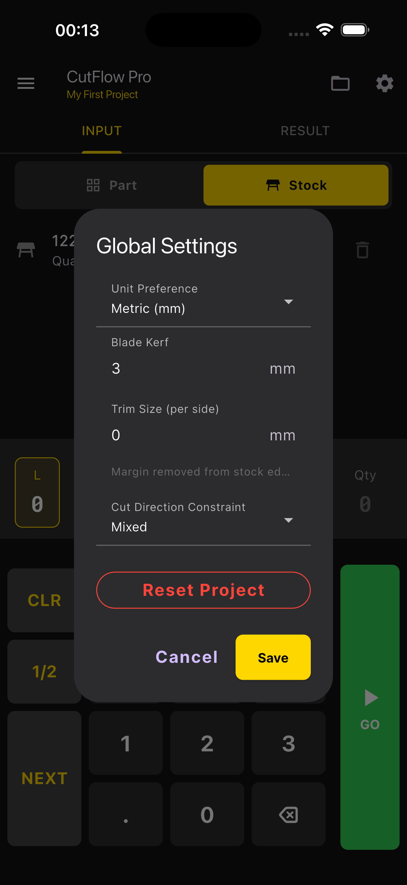
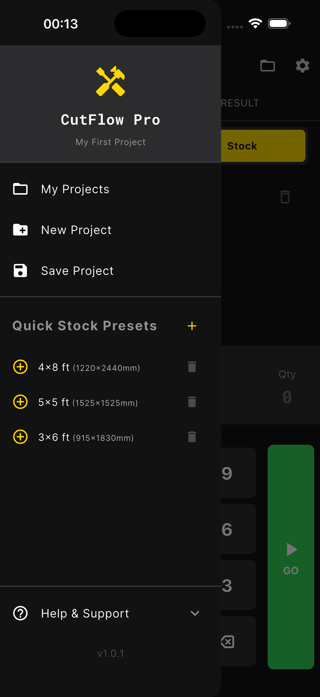
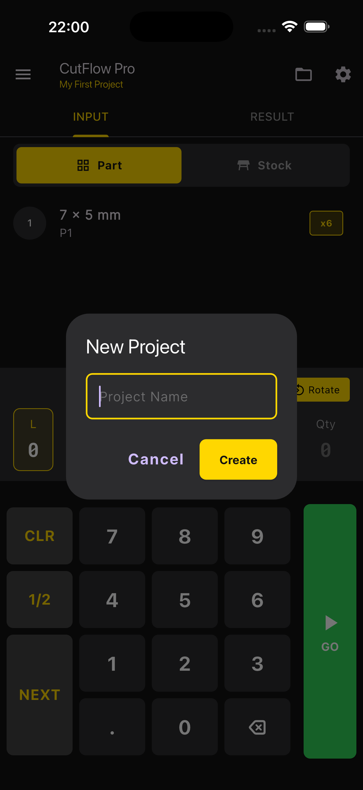

App Screenshots






CutFlow Pro is the ultimate tool for carpenters, DIY enthusiasts, and woodworking professionals. Optimize your cut lists, minimize waste, and manage your projects efficiently.
Advanced algorithms to calculate the most efficient cutting layouts for sheet goods (plywood, MDF, acrylic, etc.).
Seamlessly switch between Metric (mm, cm, m) and Imperial units depending on your project needs.
Save and organize multiple projects with custom names to keep your workflow structured.
Maintain a library of standard stock sizes for quick access and inventory tracking.
Clear, interactive cutting diagrams showing exact cuts and dimensions to guide your work.
Automatic Bill of Materials generation ensures you know exactly what materials you need.
Export your cutting plans to CSV or share them directly from the app with colleagues or clients.
All data is stored locally on your device for privacy and speed. No internet connection required.
Need help with CutFlow Pro? Our support team is here to assist you with any technical issues or questions.
Contact Support